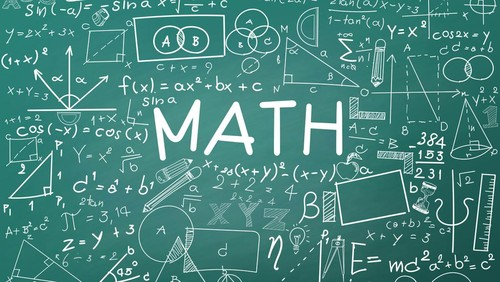

Saya tidak pernah berpikir bahwa suatu hari saya akan mengatakan, “Saya suka matematika.” Dulu, mendengar kata "matematika" saja sudah cukup membuat perut saya mual. Setiap kali guru membuka pelajaran dengan soal pecahan atau persamaan, saya hanya bisa menatap kosong papan tulis, berharap waktu berjalan lebih cepat.
Sejak duduk di bangku sekolah dasar, saya merasa matematika adalah pelajaran yang sulit dan membingungkan. Tidak seperti Bahasa Indonesia yang penuh cerita, atau IPS yang bercerita tentang sejarah dan manusia, matematika terasa seperti dunia yang asing dan dingin—penuh angka, rumus, dan logika yang tidak saya mengerti.
Namun, segalanya berubah saat saya duduk di kelas VIII. Saat itu, saya berada di titik paling rendah dalam prestasi akademik saya. Nilai matematika saya nyaris selalu di bawah rata-rata, dan saya merasa tidak ada harapan untuk bisa memperbaikinya. Saya bahkan sempat menyerah, berpikir bahwa saya memang tidak ditakdirkan untuk memahami angka.
Semua berubah ketika saya bertemu dengan Bu Ratna, guru matematika yang baru ditugaskan di sekolah kami. Beliau tidak seperti guru matematika lain yang pernah saya temui. Beliau tidak hanya mengajarkan rumus atau membacakan soal-soal latihan. Beliau bercerita—tentang bagaimana matematika ada di sekitar kita, bagaimana pola angka bisa ditemukan dalam musik, bangunan, bahkan alam semesta.
Salah satu momen yang paling saya ingat adalah ketika Bu Ratna menjelaskan konsep persentase melalui cerita belanja di pasar. Ia membawa struk belanja asli dan meminta kami menghitung diskon dari barang-barang yang dibelinya. Tiba-tiba, matematika terasa nyata. Tidak lagi hanya angka di buku, tetapi bagian dari kehidupan sehari-hari.
Melalui pendekatan yang sederhana, perlahan-lahan saya mulai memahami dasar-dasar matematika. Saya mulai berani mengangkat tangan di kelas, mencoba menjawab soal, bahkan membantu teman yang kesulitan. Rasa takut yang dulu begitu kuat mulai tergantikan oleh rasa penasaran.
Saya ingat malam-malam ketika saya duduk di meja belajar dengan secangkir teh, mencoba memecahkan soal-soal logika yang dulu saya anggap mustahil. Ada rasa puas yang luar biasa ketika akhirnya saya berhasil menemukan jawaban. Untuk pertama kalinya, saya merasakan betapa menyenangkannya proses belajar itu sendiri—bukan karena nilai, tetapi karena tantangan dan pencapaian pribadi.
Perubahan ini tidak terjadi dalam semalam. Ada hari-hari ketika saya masih merasa frustasi, ketika rumus-rumus tampak begitu membingungkan. Tetapi perbedaan terbesarnya adalah: saya tidak lagi menyerah. Saya belajar untuk mencoba, gagal, dan mencoba lagi. Saya belajar bahwa kemampuan bukanlah sesuatu yang tetap, tetapi bisa tumbuh dengan usaha dan waktu.
Kini, ketika saya mengingat kembali perjalanan itu, saya menyadari bahwa perubahan dalam cara pandang saya terhadap matematika bukan semata-mata karena saya "jadi pintar", tetapi karena ada seseorang yang mengubah cara saya melihat pelajaran itu. Bu Ratna tidak hanya mengajarkan angka, tetapi juga menanamkan rasa percaya diri bahwa saya bisa.
Matematika mengajarkan saya lebih dari sekadar hitungan. Ia mengajarkan saya kesabaran, ketekunan, dan pentingnya proses. Saya belajar bahwa tidak ada jalan pintas dalam memahami sesuatu—semuanya butuh waktu dan latihan.
Kini saya masih belajar, dan tentu saja masih banyak hal yang belum saya kuasai. Tapi satu hal yang pasti, saya tidak lagi takut pada matematika. Saya menyambutnya sebagai tantangan, sebagai sahabat yang dulu sempat saya jauhi, tapi kini justru saya hormati.
Dan mungkin, itu pelajaran paling penting dari semuanya.